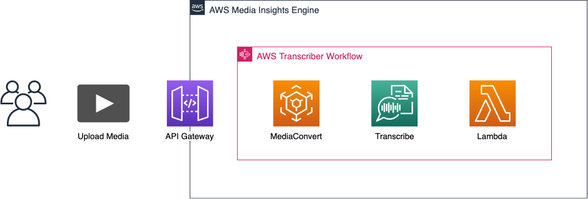
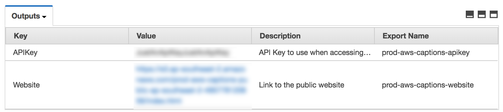
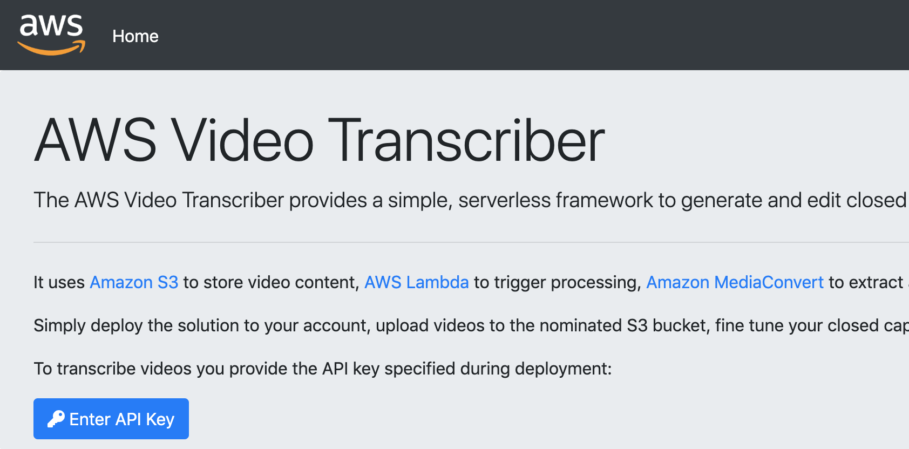
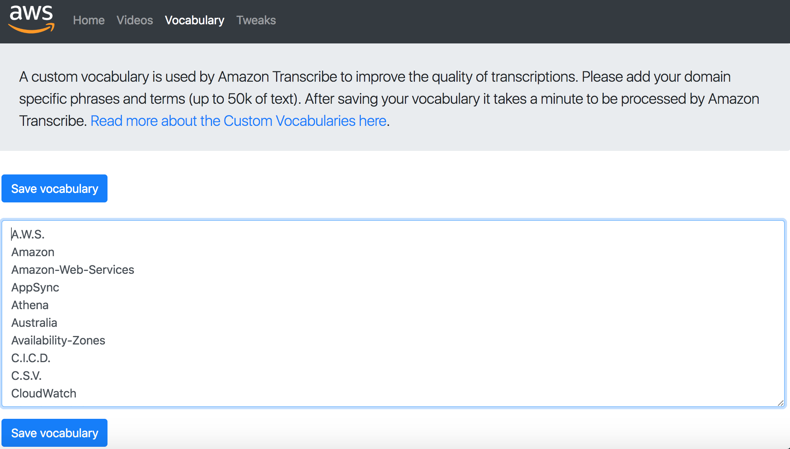
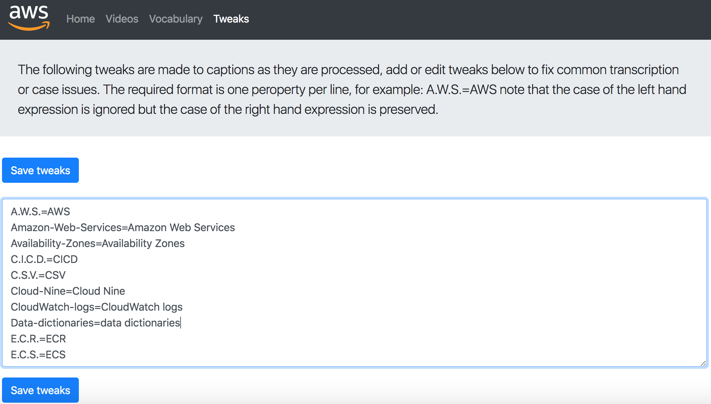
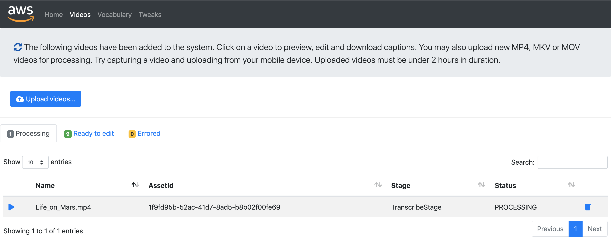
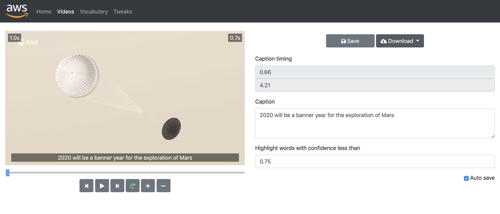
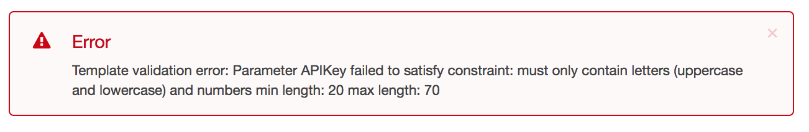
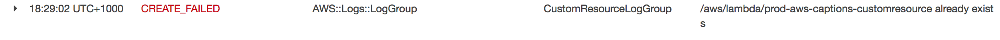

This solution provides a serverless, single page web application and set of supporting Amazon API Gateway end points and backing AWS Lambda functions which allow users to upload videos into Amazon S3 and compute and edit closed captions.

Prebuilt CloudFormation templates have been deployed along with MIE. Update the MIE stack and set the DeployOperatorLibrary, DeployTranscribeWorkflow, and TranscriberApp CloudFormation parameters to true.
Once the stack creation is complete, update the TranscriberWebApp stack and modify the API key and choose a locale that Transcribe will use to process your video's audio data.
The API Key is used to provide to users access to the system. You must provide a strong, random, alpha-numeric API key between 20 and 70 characters long. Otherwise the stack will fail to launch and you will see this error.
Once you have deployed your stack, the link to your website is displayed in the CloudFormation Outputs tab along with your API Key. Click the Website link to access the site.

On the home page there an Enter API Key button used for entering your API key, locate your API key using the Outputs tab of the CloudFormation service after deployment and enter it.

After deployment and before uploading videos, log into your site, click on the Vocabulary page and create a custom vocabulary with at least one term. You might consider using:
A.W.S.You can enter up to 50kb of custom vocabulary terms, if you get a failure to save make sure each phrase is on its own line and that there are no special characters.

You can add common terms for your business here such as brand names and industry specific terms to guide Transcribe in providing the best automated result.
After saving the vocabulary, Transcribe needs to train against the new vocabulary which can take several minutes. You are given visual feedback as to when this process is complete. Videos launched during this time will fail if the vocabulary is not in a ready state.
After deployment log into your site, click on the Tweaks tab and create a custom tweak configuration with at least one term. You might consider using:
A.W.S.=AWSTweaks are used to transform common transcription issues you might find and also to correct Amazon Transcribe custom vocabulary verbatim transcriptions.

The Videos page shows the current videos in the system and organizes them into tabs based on their processing status. You can search for videos here, start the caption editing process, trigger reprocessing, and delete videos.

You can upload videos from any browser and launching the site on mobile allows users to capture and upload videos directly from a mobile phone.
Click on the Upload Videos... button to start the video upload process.
New AWS accounts have a service limit of 10 concurrent transcription jobs, this limit can be raised with an AWS service ticket. Videos launched above this threshold will fail and can be relaunched from the Errored tab.
Once your video has been transcribed you can tweak the captions to get things perfect. When first viewing the video, the system starts in a mode that pauses between each caption block, toggle this mode to view the video continuously.
The Auto save function flushes edits regularly to the MIE DataPlane.

This library is licensed under the Apache 2.0 License.
You can download completed captions text tracks from the Caption editing page in either WEBVTT/SRT formats
This is not currently supported but will be considered if there is customer demand. It will require all resources to be prefixed with the CloudFormation AWS::StackName pseudo parameter.
If you see the following error while launching your CloudFormation stack:

Please verify the API Key you provided is between 20 and 70 characters long and only contains Alpha-Numeric characters, it uses the following regex:
[a-zA-Z0-9]{20,70}If you are deploying to the same region after previously removing the stack you may see the following error:

Simply delete the stack, go to the CloudWatch Logs Console in the region and remove the dangling log group:
/aws/lambda/prod-aws-captions-customresourceIt can remain after a stack removal due to CloudWatch log flushing recreating the log group. Then simply deploy the CloudFormation stack once again.
Please raise a GitHub Issue with the error reported in the stack and we will investigate.
To remove the solution delete the CloudFormation stack. Note that deletion will fail if you have not emptied the video, audio and transcribe buckets created as part of the stack.
After remove the stack, the CloudWatch Log Group for the Lambda custom resource is left behind and must be manually removed before redeploying:
/aws/lambda/prod-aws-captions-customresourceCloudFormation will refuse to remove non-empty S3 buckets so these must be manually emptied before removing the stack:
prod-aws-captions-audio-<region>-<accountId>
prod-aws-captions-video-<region>-<accountId>
prod-aws-captions-transcribe-<region>-<accountId>If you get this failure, empty the buckets using the S3 console and try deleting the stack again.
Clone the MIE repository locally
Have Node and NPM installed
Make sure you have the AWS CLI properly configured
Make sure you have Docker installed on your computer
Navigate to the video-transcriber directory and run the following command to install Node dependencies:
npm iUse the following shell commands to configure the build environment parameters:
DIST_OUTPUT_BUCKET=[enter the name of your bucket here]
VERSION=[enter an arbitrary version name here]
REGION=[enter the name of the region in which you would like to build MIE]Create an S3 bucket for the MIE build files named $DIST_OUTPUT_BUCKET-$REGION using the input you gave above.
Run the following build command in your terminal from the deployment directory:
./build-s3-dist.sh $DIST_OUTPUT_BUCKET $VERSION $REGIONAfter a few minutes the build files should appear in your S3 bucket.
From your S3 bucket, navigate to media-analysis-solution/main/cf/media-analysis-workflow-stack.template and use this CloudFormation template to create your stack and deploy MIE.
Deploy the Solution to create the application Lambdas, API Gateway, and the supporting workflow and operators in MIE.
After deploying the application in CloudFormation, find the site_config.json in the S3 bucket prod-aws-captions-public-$REGION-$ACCOUNT_NUMBER and download that to the MIE video-transcriber/web directory.
Navigate to video-transcriber/web and run the following command:
python -m SimpleHTTPServerThe application front end templates and js files are now hosted on localhost:8000
To update front end files served on localhost for testing purposes, open the developer console and under the Network tab select Disable cache. Now when the developer console is open and you refresh the page it will retrieve the latest changes from your local repo.
To update front end files served from S3, upload the new files to the prod-aws-captions-public-$REGION-$ACCOUNT_NUMBER website bucket and grant public read access to any new uploaded objects.
For testing purposes: simply update your lambdas in the Lambda console.
Otherwise:
Run the build script again from the deployment directory using the following command: ./build-s3-dist.sh $DIST_OUTPUT_BUCKET $VERSION $REGION
Update the MIE stack parameter for the TranscriberApp to false, and remove the CloudWatch log group /aws/lambda/prod-aws-captions-customresource.
Once the build script finishes, update the MIE stack parameter for the TranscriberApp to true. Once this is done you will have to download the site_config.json from the website bucket to host the website locally again.